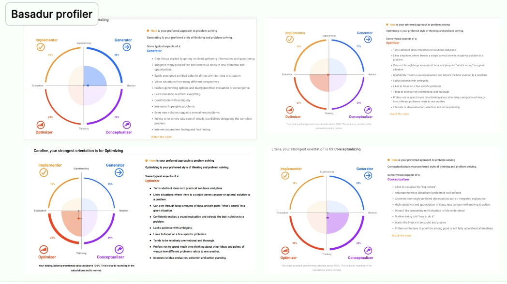
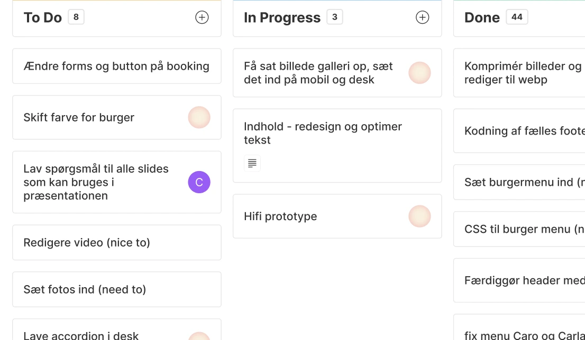
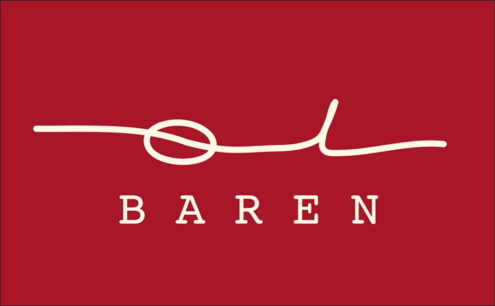

Projekter
Grundlæggende indhold
Produkt
Sandboxsite - øvelse på brug af indhold og opfriskning på alle temaer.
Redign af allerede eksisterende website, udarbejdet i grupper.
Proces
Forståelse for gruppearbejde og workflow. gruppedannelsen foregik via Basadur profiler for at matche forskellige profiler.
I grupperne gjorde vi brug af kontrakter, scrum og kanbanboard til opgavefordeling go deadlines
Stort fokus på research af det allerede eksisterende site og selve virksomheden samt deres målgruppe på virtuelt og i virkeligheden.
Forståelse for git og arbejde i branches på tværs af lokale enheder
Gruppe pæsentation i pecha kutcha format med mundtlig feedback
Reflektion
Fokus på at forstå teamets individuelle arbejdsrytmer og forventningsafstemning inden vi påbegyndte arbejdet, var alfa omega for den fortsatte proces. Det blev for første gang tydeligt hvor vi kunne se os selv i et team ift hvor i processen vi hver især brillierede. Det var sjovt at arbejde med projektstyring og få en kunde i hænderne som vi skulle forstå før vi kunne udføre arbejdet


